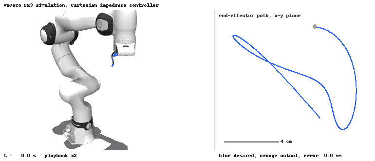

Learning the residual joint torque of a Franka Panda with Gaussian processes, and feeding a small, clipped share of the prediction back into an impedance controller.
Private repository. This page describes the work without the code.
At a glance
9
design decisions documented
Stage 1–5
plus GOAL1, GOAL2, GOAL12
14-D
support check before GP-on
Off
compensation by default

Simulation only: the team’s Python Cartesian impedance controller tracks a spatial multisine trajectory in closed loop on a MuJoCo FR3 model (1 kHz physics, playback 2x). The 2.8 mm shown is the simulation’s tracking error, not a real-robot result; no real-robot footage or numbers are shown here.
The problem
An impedance controller leaves a residual between the torque it expects and the torque the robot needs. A GP can predict part of that residual, but feeding a learned prediction into a torque loop on real hardware is risky, and an online-updating model makes any before/after comparison hard to attribute. The work was to make GP compensation testable on the real robot without losing control of the risk.
How it works
The GP model, training pipeline and the original controller are earlier team work. On top of that, experiment switches pick the compensation source, freeze the model, and set a scale and an Nm clip; compensation is off unless a run turns it on. Each stage of testing has a written plan, a lab checklist, a run, an offline analysis script and a result summary.
Key decisions
01
Evaluate a frozen GP behind explicit switches
Chosen
Switches for online update, model directory, compensation source, scale and clip. Test runs turn online update off.
Instead of
Testing with the original online-updating GP, whose model changes during the run being measured.
Trade-off
No adaptation during a run, but every on/off comparison is attributable to one fixed model. Default behaviour is unchanged.
02
Small scale with a clip, raised one step at a time
Chosen
Start at a small scale with a tight Nm clip, at 50 Hz, and move up only after the previous step is stable.
Instead of
No-clip or unlimited GP-on runs.
Trade-off
Slower progress and a small effect size, in exchange for staying inside a known torque bound.
03
Check joint-space support before turning GP on
Chosen
A 14-D support preflight over joint positions and velocities, and a no-GP logging run first.
Instead of
Continuing after a conservative gate passed, or fixing only the one joint that looked out of range.
Trade-off
It blocks some trajectories that might have worked, but the GP is never asked to extrapolate. Joint 7 stays out of compensation.
04
Compensation goes through the controller, not a replay node
Chosen
For formal comparisons the trajectory is a reference to the impedance controller, so one torque pipeline applies GP compensation through the existing gates.
Instead of
A joint-space replay node as the final torque publisher, which bypassed the compensation gate.
Trade-off
The direct replay route was stopped after it triggered a communication-constraint fault on the real robot; it was treated as an architecture problem, not something to retry.
05
Simulation before the lab, and offline analysis as the record
Chosen
MuJoCo kinematic replay, then fake-hardware replay in RViz, then the lab. After each run, analysis scripts and a written summary with its caveats.
Instead of
Going straight to the robot with a new trajectory, or re-running the robot without a plan.
Trade-off
Fewer robot runs and slower turnaround. Simulation proves only kinematics and wiring, and each conclusion is scoped to one run.
Results
The stage reports compare a strict no-GP baseline with GP-on runs and compare the online GPs with a historical residual database. Those real-robot numbers come from single runs in a lab and are not published on this site. In an interview I can walk through the reports and what each one does and does not show.
My part
A team project at a university robotics lab. My part: code development, including the experiment switches that made frozen-GP tests possible and safety work in the controller (guarded startup, session-relative trajectory anchors); real-robot testing in the lab alongside the team; the staged test programme with a plan and report for each stage; and the offline analysis that compared the online GPs with a historical residual database. The GP model and training pipeline are earlier team work.
Limits and what is next
Every real-robot conclusion rests on one run, so none of it is a statistical result.
Simulation covered kinematics and topic wiring only: no dynamics or torque-safety claims.
The session-relative anchor is work in progress; no validated real run after the last fix is recorded.